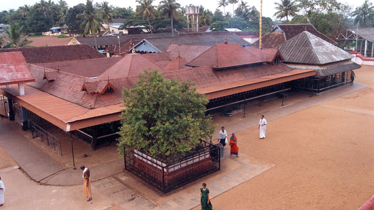

Ernakulam

Ernakulam is the Central Business District of the city of Kochi in Kerala, India and has lent its name to the Ernakulam district.[Many major establishments, including the Kerala High Court, the office of the Kochi Municipal Corporation and the Cochin Shipyard are situated here.
Tourist Spots
Chottanikkara Bhagavathy Temple
The Chottanikkara Devi Temple is a temple dedicated to the Hindu mother goddess Bhagavati, a form of Mahalakshmi.She is believed to be residing in Chottanikkara along with her husband Maha Vishnu. The temple is located at Chottanikkara, a southern suburb of the city of Kochi in Ernakulam district, in the state of Kerala, India and is one of the most popular temples in the state. The temple is also known for conducting exorcism
Marine Drive

Marine Drive is a picturesque promenade in Kochi, India. It is built facing the backwaters, and is a popular hangout for the local populace. Despite its name, no vehicles are allowed on the walkway. Marine Drive is also an economically thriving part of the city of Kochi.[2] With several shopping malls it is as an important centre of shopping activity in Kochi. Major fast food joints, including Marrybrown, DiMark, Coffee Bar are present along the walkway. The view of the setting and rising sun over the sea mouth, and the gentle breeze from the Vembanad Lake has made Marine Drive an important tourist destination in Kochi. Hundreds of people (both natives, and tourists) throng the walkway during the evenings. The walkway starts from the High Court Junction and continues until the Rajendra Maidan. There are also several boat jetties along the walkway